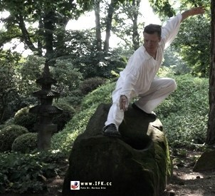
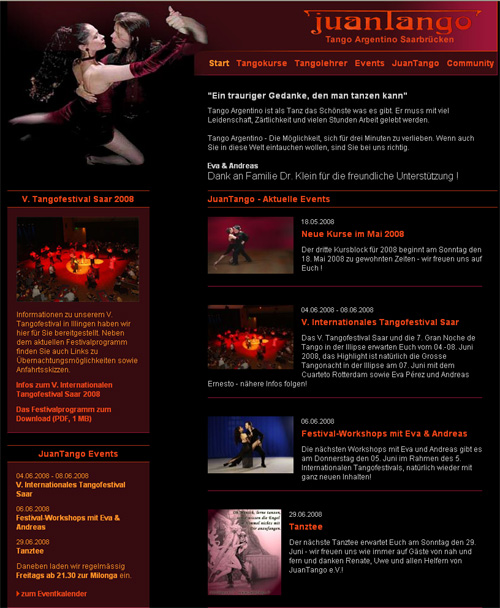

|
|
Partnerstädte
Die SCR-Methode - effektive Art des Tangounterrichts mit Freude authentisch erfolgreich sein !
Partnerstädte:
- Saarlouis Tangoszene in Saarlouis
- Saarbrücken - seit 1996 ist die bezaubernde und ausdruckstarke professionelle Tänzerin, meine Tanzpartnerin Eva Pérez ( Fotos mit Eva ), im Saarland tätig und betreibt die älteste und einzige professionelle Tangoschule in Saarbrücken. Seit 1998 leitet sie die bekannte Tango Argentino Schule "JuanTango" mit vielen Veranstaltungsangeboten zum Tanzen :-), seit 2001 bin ich gemeinsam mit ihr dort aktiv. Ein ganz besonderes Highlight ist das Grosse Internationale Tangofestival, das einmal im Jahr von der Tanzschule JuanTango zusammen mit dem JuanTango e.V. organisiert wird. Einfach vorbeischauen, alle Gäste sind herzlich willkommen!
- Speyer - seit 2004 bin ich zusammen mit meiner reizenden Tanzpartnerin Michaela ( Fotos mit Michaela ) in der wunderschönen Domstadt Speyer tätig. Wir wünschen uns einen regen Austausch zwischen den einzelnen Tangoszenen, mit dem Auto ca. 25 min von Bad Dürkheim entfernt. Kommt vorbei, wir beißen nicht ;-)
- Pforzheim - TangoRevolution.de
- Karlsruhe - seit 2001 sind Eva Pérez ( Fotos mit Eva )und ich in der badischen Metropole Karlsruhe tätig. Das Tango-Team Margret, Eva, Hans und ich würden Euch gerne begrüßen. Auch hier wünschen wir uns einen regen Austausch, ca. 50 min mit dem Auto von Bad Dürkheim entfernt.
- Metz - auch dort hat der Tango durch die Pionierarbeit von Eva Pérez unter der regen Mitarbeit von Guy Reichardt Fuß gefasst, besuchen Sie uns im schönen Frankreich!
- Neustadt
a.d. Weinstrasse - unter der Leitung von Elke und Michael. Nur einen "Katzensprung" entfernt. Ich wünsche den beiden viel Erfolg beim Ausbau der dortigen Tangoszene.
- Tangoshow - ja ich weiß, Tangoshow ist keine Stadt, aber auch sehenswert ;-)
alle Infos unter www.Tangoshow.net ( Fotos ) oder www.ShowTango.de
- SOS Marktplatz SOS - Selbst Organisierende Selbsthilfegruppe !
Tangofreunde von Nah und Fern treffen sich zum freien Tango-"Geheimtraining" ;-)
- Unterstützer der Tango-Idee Tanzhaus La Danza sowie die Cha Cha Bar.
- IFK - Institut für Körperschulung Qigong, Taiji, Yoga, Bewegungslehre, Feldenkrais, Rolfing

[zurück]
Tangoszene in Saarlouis
Eva Pérez
Tel.: 06831 - 8900102
Mobil.: 0172 - 68 40 900
Email: evamape@aol.com
Homepage: www.Tango-Passito.de
|
[zurück]
Tangoshows
Eva Pérez und Andreas ‚Ernesto' geben in ihrer Show einen Einblick in die abwechslungsreiche Geschichte des Tango, die fröhliche Milonga, den eleganten Vals und den gefühlsstarken Tango.
Kontakt und Buchungsanfragen:
Kurse+Workshops+Shows+Einzelstunden
Eva Pérez
Tel.: 06831 - 8900102
Mobil.: 0172 - 68 40 900
Email: evamape@aol.com - www.Tangoshow.net
|
[zurück]
Tangotanzen in Metz - Frankreich
Wirkungsstätte von Eva Pérez und Guy Reichardt.
par téléphone:
Guy Reichardt 03 - 87 33 14 39
par téléphone:
0033 - 3 - 87 33 14 39 ( depuis l'Allemagne )
par E-mail: guy.reichardt@free.fr
www.tango-metz.com
Wegbeschreibung Metz
|
[zurück]
Tangoszene in Karlsruhe
Das Tango-Team um Margret, Eva und Andreas würden Euch gerne begrüßen.
Telefon: 0721 - 35 62 92 Margret Wolf
E-mail: tanztribuene@t-online.de
www.tanztribuene.de
Tango-Abend (Milonga) jeden Mittwoch, ab 21.30, in der Scenariohalle im Kulturzentrum Tempel.
Hardtstr. 37 A, Karlsruhe
Wegbeschreibung Tanztribüne
|
|
[zurück]

|
Tangotanzen in
Saarbrücken
Eva Pérez unterrichtet Tango Argentino in Deutschland und im europäischen Ausland, zusammen mit Andreas. Bei Interesse lehren wir auch Elemente des Show- bzw. Bühnentango.
Junatango ist die älteste und größte Tangoszene in Saarbrücken. Aufgebaut unter der Leitung von Eva Pérez.
Für Fragen und Anregungen steht Frau Pérez Ihnen gerne zur Verfügung.
|
Kontakt und Buchungsanfragen: Kurse+Workshops+Shows+Einzelstunden
Eva Pérez (1. Vorsitzende)
Tel: 0681 - 390 52 01
Mobil: 0172 - 68 40 900
Email: eva@juantango.de
www.juantango.de
Alle Veranstalltungen finden im JuanTango statt !
Richard Wagner Straße 3
66111 Saarbrücken
Sie finden uns über die
Wegbeschreibung von JuanTango.de
oder weitere interaktive Wegbeschreibung von Google-Map
JuanTango e.V. ist ein gemeinnütziger Verein mit dem Ziel der Förderung des argentinischen Tangos.
Ansprechpartner und Infos über JuanTango e.V. finden Sie hier mit Kontaktadressen in der Übersicht.
Tango ist eine Kunst- und Kulturform, die Menschen aus der ganzen Welt näher zusammenbringt.
Regelmäßige Veranstaltungen:
- Milonga:
- jeden Freitag ab 21.30 Uhr.
Organisation und Ansprechpartner:
- Eva Pérez Mobil: 0172 - 68 40 900
- Email: eva@juantango.de
- Übungsabende:
- jeden Dienstag freies Training ab 16.30 Uhr,
Organisation und Ansprechpartner:
- Eva 0172 - 68 40 900 und
- Uwe 0681 - 84 12 47
- Tanztee
- Sonntag Nachmittag, ab 16.30 Uhr,
Organisation und Ansprechpartner:
- Uwe Schaettgen (Kassenwart)
- Tel.: 0681 - 84 12 47
- Open Air
- Milonga im ganzen Monat August
Wann:
- jeden Mittwoch ab 20.00 Uhr
- nur im Monat August !
- Eintritt frei !
- bei schlechtem Wetter wird im Archipenko getanzt
- Anfragen an
- Eva 0172 - 68 40 900 oder
- Uwe 0681 - 84 12 47
Anschrift: ARCHIPENKO
JunaTango e.V.:
Informationen zu unserem Internationales Tangofestival haben wir hier für Sie bereitgestellt.
Neben dem aktuellen Festivalprogramm finden Sie auch
Links zu Übernachtungsmöglichkeiten sowie Anfahrtsskizzen.
|
|
[zurück]
Tangotanzen in Speyer
Anfang 2004 haben wir in Speyer unsere Tango-Argentino-Schule eröffnet.
Mit den Jahren hat sich in der schönen Domstadt eine beachtliche Tangoszene entwickelt – aufgebaut,
gehegt und gepflegt von Michaela und Andreas.
- Milonga
- Termin:
- jeden 3. Freitag im Monat
- Beachte:
- In den Pfalz-Ferien keine Milonga
- Übungs- und Trainingsmöglichkeiten
- Beginn:
- ab 22.00 Uhr, nach den Tangokursen
- Alle Veranstalltungen
- Wo:
- Veranstalltungen finden in der Gaststätte:"Philipp Eins" statt.
- JohannesStr. 19, 67346 Speyer-Zentrum
- Organisation und Ansprechpartner:
|
[zurück]
Tangotanzen in Neustadt
Neustadt a.d. Weinstrasse - unter der Leitung von Elke und Michael.
Ich wünsche den beiden viel Erfolg beim Ausbau der jungen Tangoszene.
- Milonga
- Milongatermine bitte telefonisch erfragen !
- Organisation und Ansprechpartner: Elke, Telefon: 06341 - 93 91 47
Angaben werden noch vervollständigt !
|
| [zurück] | |
|
|
Unterstützer der Tango-Idee
Dank an das Tanzhaus La Danza
für die freundliche Unterstützung !
Tanzhaus La Danza - Katja Hillenkamp
Kaiserslauterer Straße 1
67098 Bad Dürkheim
Tel.: 0 63 22 - 88 88
|
| | |

|
Durch die tolle Unterstützung
der wunderbaren Cha Cha Bar, unter der Leitung von Stefan,
ist das Flair der Tango-Atmosphäre besonders gelungen.
Café Bar Cha Cha
Kaiserslauterer Straße 1
67098 Bad Dürkheim
Tel. 06322-950208
|
|
|